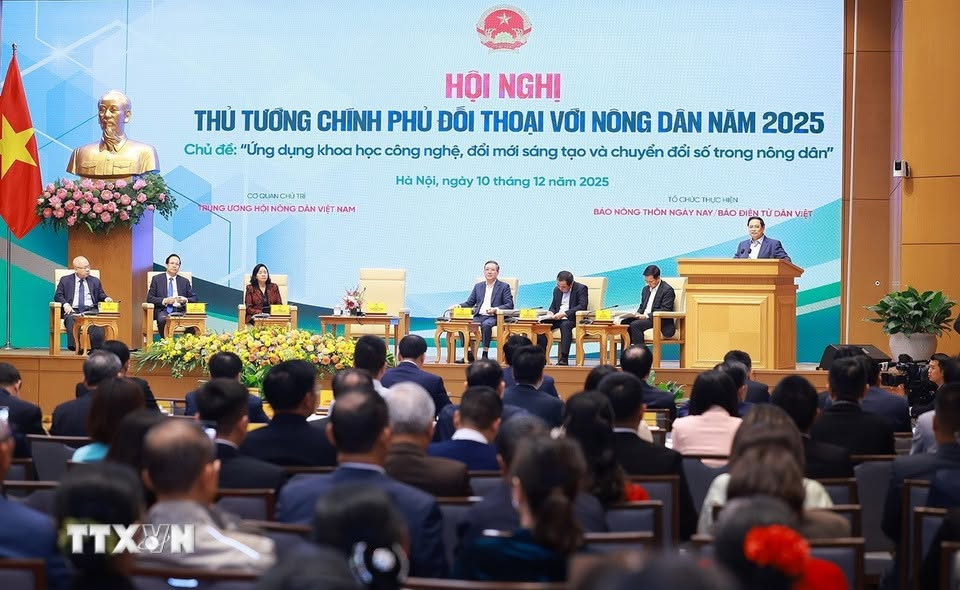

- 0lần tổ chức
kể từ năm 2018 - 0điểm cầu trực tuyến
trên toàn quốc - 0nông dân tham gia
hội nghị - 0bài báo tư liệu
trên Dân Việt
Kho tư liệu
Bảy kỳ Hội nghị,
Bảy kỳ Hội nghị,
bảy lần lắng nghe
Chọn một năm để xem thông tin Hội nghị và toàn bộ bài báo tư liệu của kỳ đó.